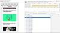
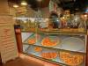

-
 Analysis of HyperText Transfer Protocol and its Variants
Analysis of HyperText Transfer Protocol and its Variants
Our first/minor project that was accepted at 2 conferences. Swag! B-)
-

Optimization of Critical Resources of a website
Final project open for reviews
-
 Collaboration and Team Work
Collaboration and Team Work
Makes work so much easier
-

Pizza party
We owe it to ourselves